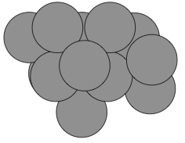

Basin Hopping Tutorial¶
This tutorial explains how to run a basin hopping global optimization calculation on a Lennard-Jones 13 particle.

Here is the con file of our starting structure:
Generated by tsase
101.942400 103.142600 102.605500
90.000000 90.000000 90.000000
1
13
1.000000
H
Coordinates of Component 1
50.594227 52.017165 52.277482 0 0
51.578540 52.642148 51.195222 0 1
51.243758 52.919086 52.218383 0 2
50.490127 52.736378 51.417663 0 3
51.522643 50.884535 51.656125 0 4
50.927263 51.743087 51.272643 0 5
51.240676 50.960436 50.573042 0 6
51.275727 52.061877 50.284160 0 7
50.434110 50.976423 51.879062 0 8
51.695007 51.919472 52.038680 0 9
51.363596 52.199101 53.064923 0 10
52.017483 51.639074 51.008389 0 11
51.187843 51.165217 52.678225 0 12
Here is the config.ini file:
[Main]
job=basin_hopping
# specify the temperature used in the Monte-Carlo step acceptance
temperature=500
[Potential]
# use the lennard-jones potential, in reduced-units
potential=lj
[Communicator]
# run the client locally
type=local
# only run 1 client at a time
number_of_cpus=1
# run 10 jobs per invocation of eon
num_jobs=10
# search $PATH for a binary named eonclient
client_path=eonclient
[Basin Hopping]
# perform 100 Monte-Carlo steps
steps=100
# use a gaussian distribution for the displacements instead of a uniform distribution
displacement_distribution=gaussian
# the standard deviation for the gaussian which is used to displace each degree of freedom
displacement=0.3
[Optimizer]
# use the lbfgs optimizer
opt_method=lbfgs
# stop the optimization once the max force per atom drops below 0.001 eV/A
converged_force=0.001
# specifies the value of 1/H0 used in the lbfgs optimizer
lbfgs_inverse_curvature=0.01
You should now have a directory with two files in it: config.ini and
reactant.con. To run the calculation run the eon script:
$ eon
registering results
0 (result) searches processed
0 searches in the queue
making 10 searches
10 from random structures 0 from previous minima
job finished in .//jobs/scratch/0
job finished in .//jobs/scratch/1
job finished in .//jobs/scratch/2
job finished in .//jobs/scratch/3
job finished in .//jobs/scratch/4
job finished in .//jobs/scratch/5
job finished in .//jobs/scratch/6
job finished in .//jobs/scratch/7
job finished in .//jobs/scratch/8
job finished in .//jobs/scratch/9
10 searches created
Eon first looks for any completed jobs. As this is the first time you have run
Eon, it finds no previous calculations to register. It then makes the input
files needed for the 10 basin hopping jobs and writes them to
jobs/scratch/0..9. Then eonclient is run in each of these directories.